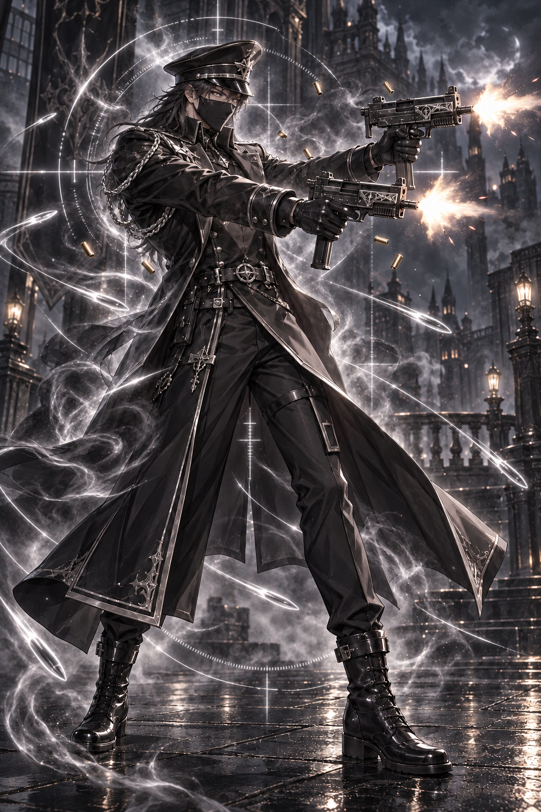
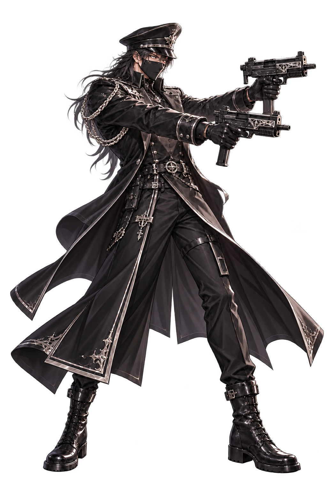
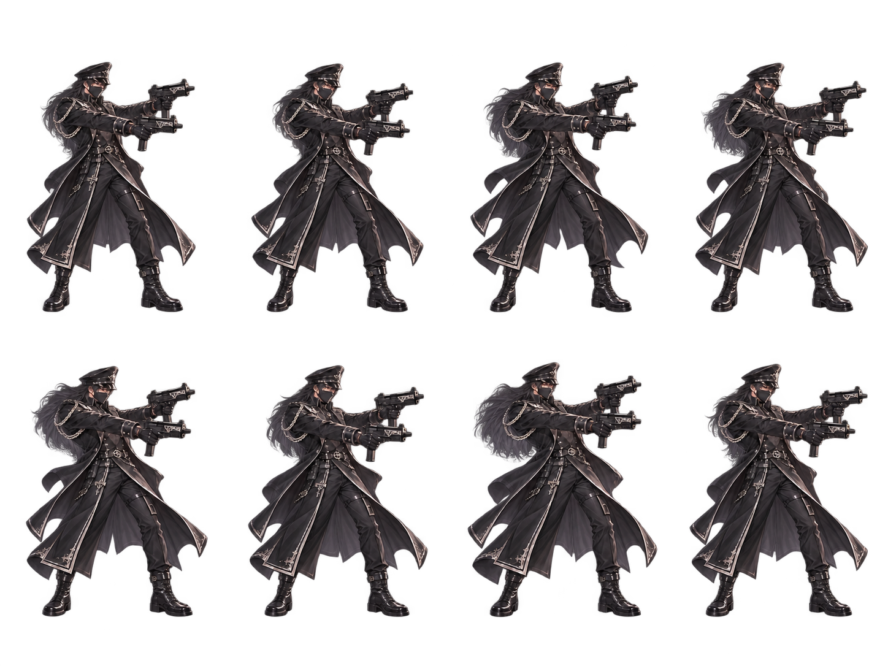
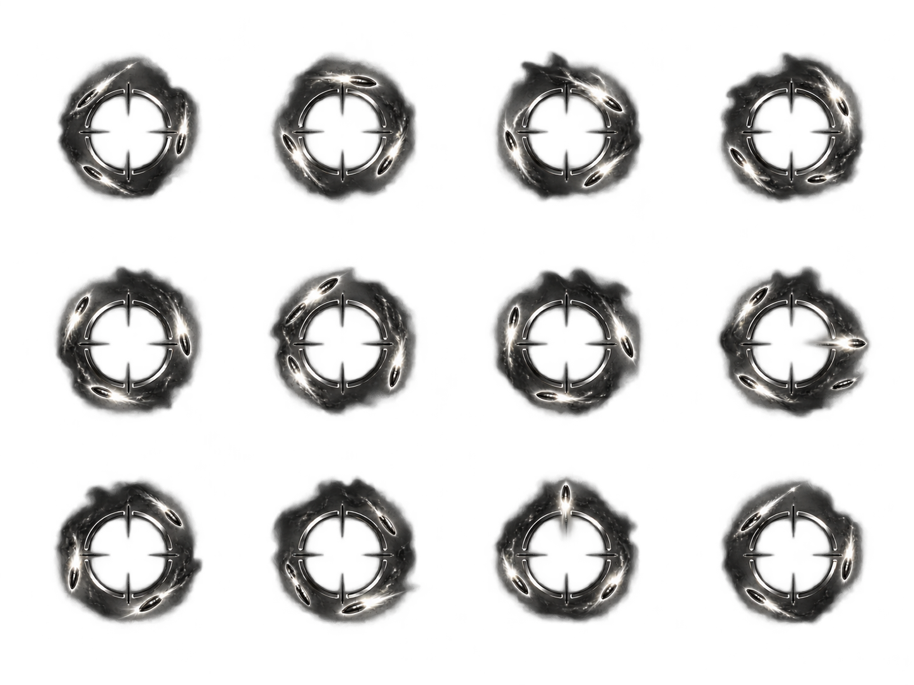
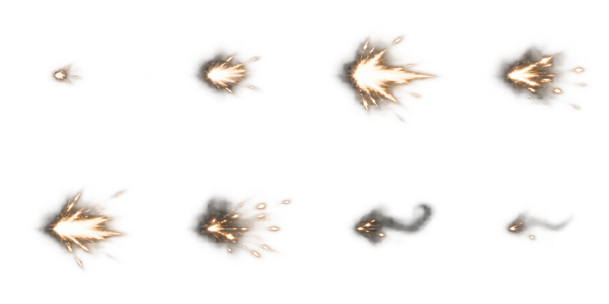
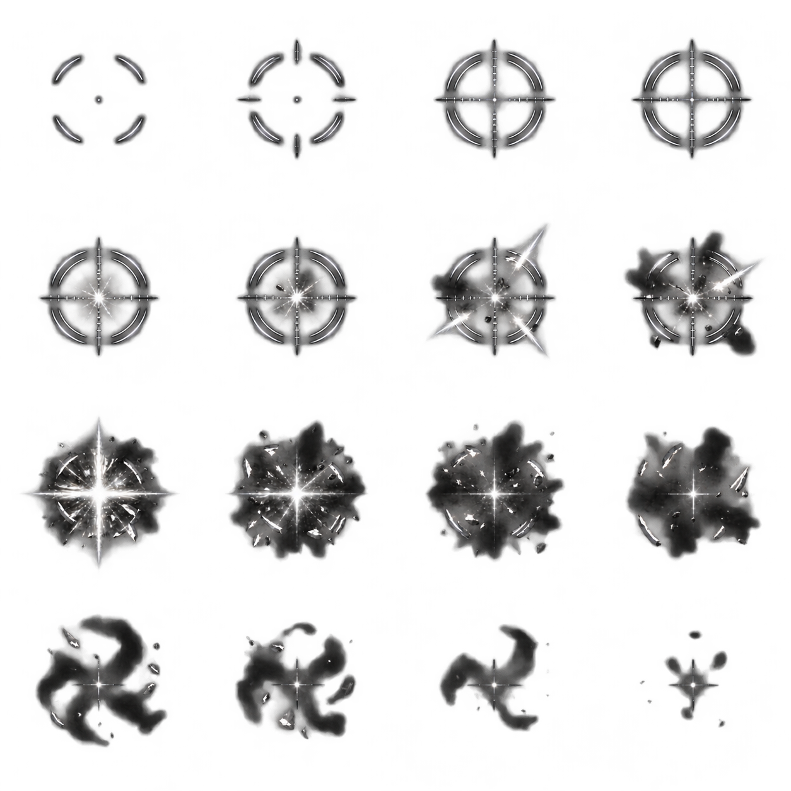
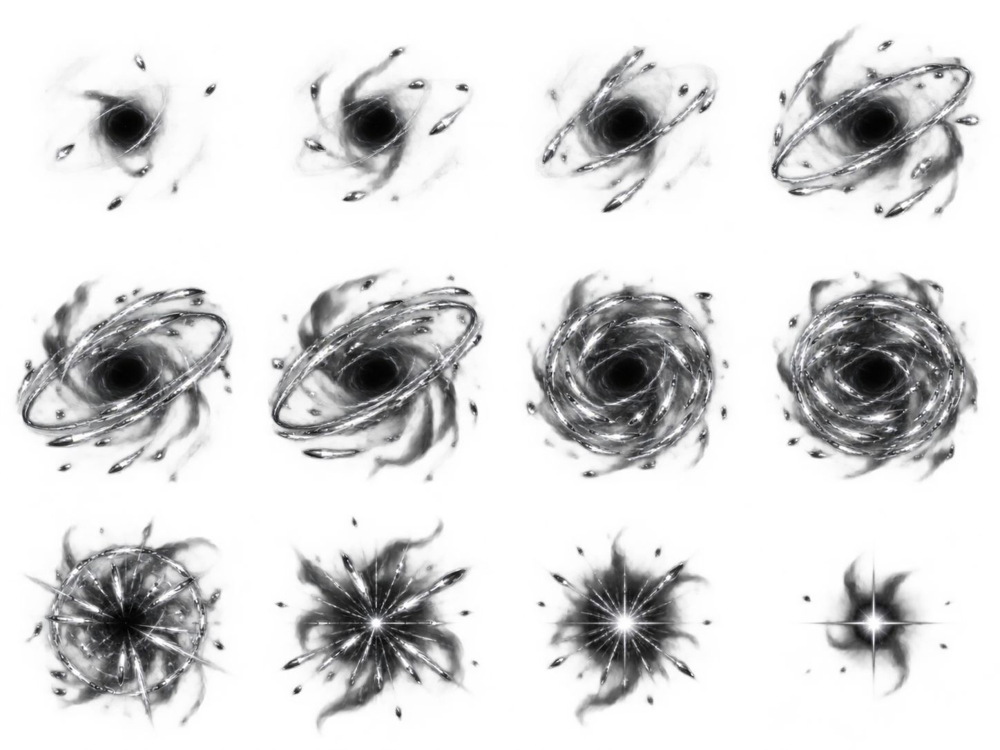
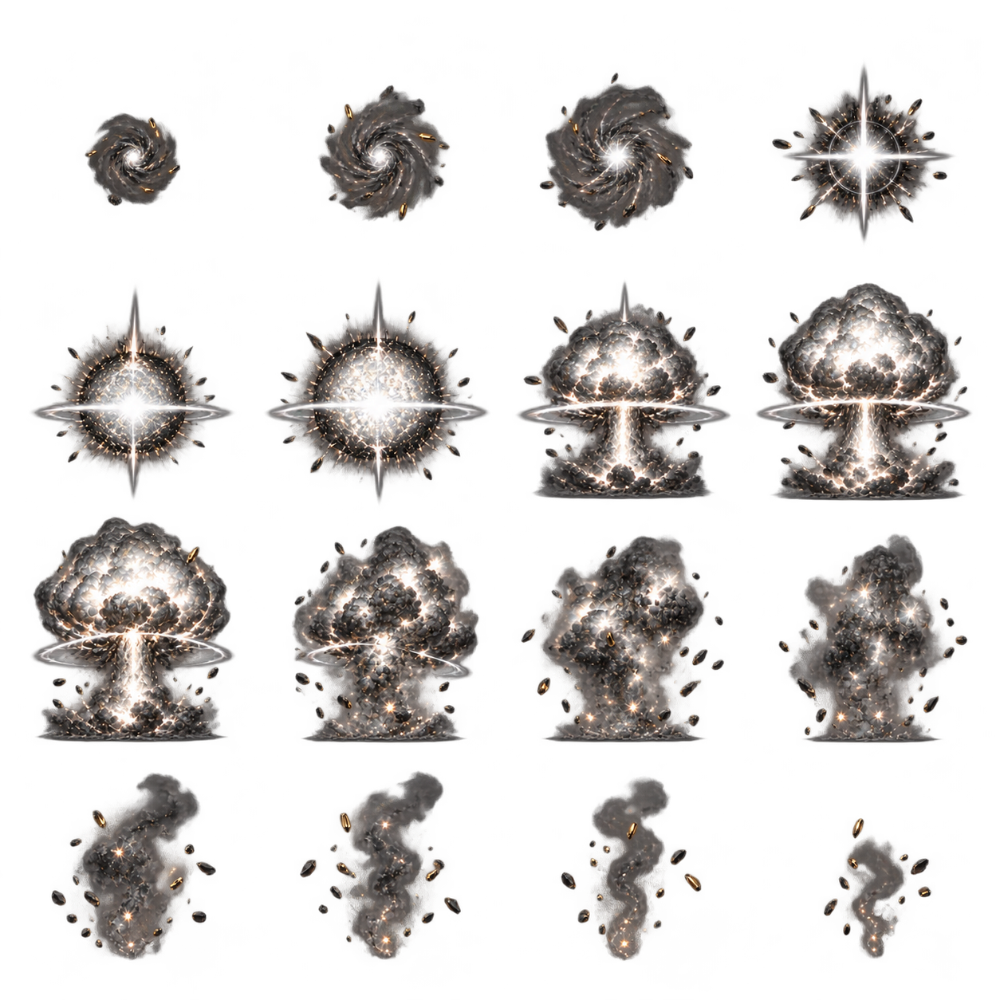
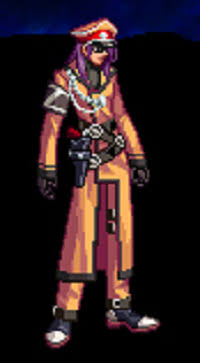

01 / 일러스트
1024 × 1536
장발 · 얼굴 각도 유지 · 사격 방향 시선원본 PNG ↓

02 / 서 있는 전투 리소스
투명 PNG
RIGHT FACING / STANDING

전투 전신 · 스코프 아우라
배경
캐릭터와 아우라를 별도 계층으로 표시투명 전신 PNG ↓

첨부의 고개 각도를 유지하고 눈동자는 사격 방향으로, 머리는 자연스럽게 어깨 아래로 이어지도록 수정했습니다. 정밀 조준경과 탄환 궤적을 두른 군인 콘셉트의 광원입니다.
자연스러운 성인 비율검은 천 마스크우측 방향
SSS 리미티드급 연출 승인본 · 흰색 실루엣 광원과 제자리 회전 아우라. 아래에서 일제난사와 광역기 ‘양자 탄도 폭쇄’를 재생할 수 있습니다.
V3 BATTLE / QUANTUM BALLISTICS
양자 탄도 폭쇄
적 전원 포착 → 상공 미사일 강하 → 직격 대폭발 → 연쇄 폭격
쌍우지 사격으로 적 전원의 폭격 좌표를 지정합니다. 상공에서 추진 불꽃을 뿜는 미사일이 내려와 적 진형의 중심을 직격하고, 각 표적에도 후속 미사일이 떨어져 연쇄 폭발합니다.
리소스 준비
기존 V3 전장을 준비하고 있습니다.
일제난사는 표적 3개, 광역기는 적 진형 5명을 사용하는 연출 시안입니다. 피해량·공격 횟수·섬멸 판정은 별도 게임 설정 사항입니다.
사격 모션과 독립 이펙트 원본 72프레임






